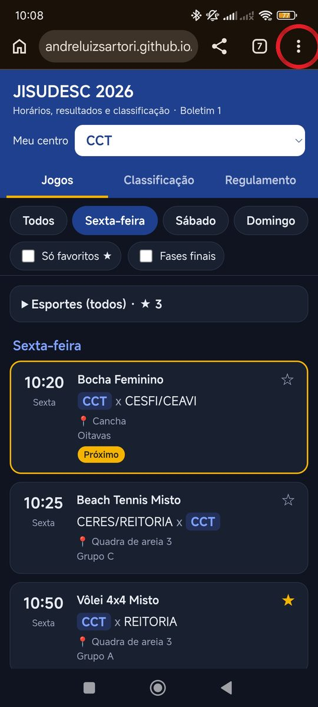
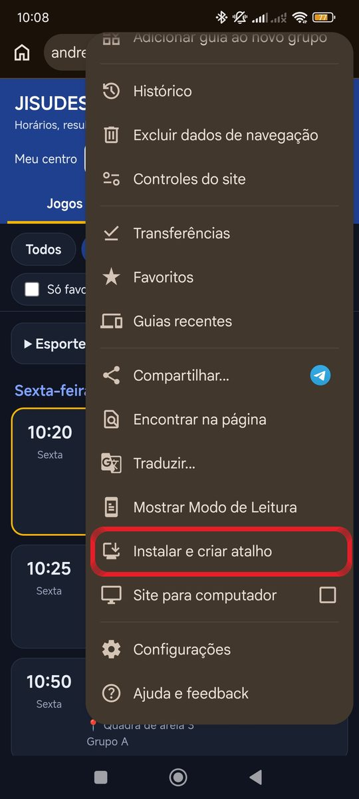
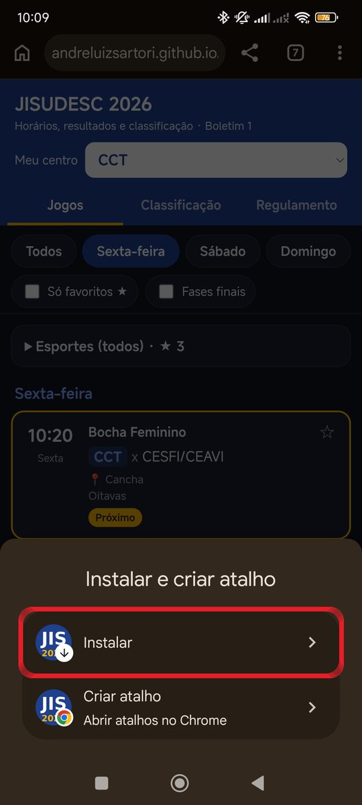
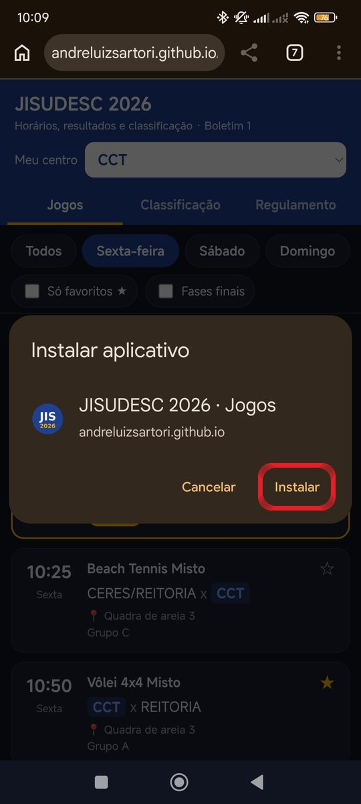

Abra o link no Google Chrome e siga os passos abaixo.
1Toque nos três pontinhos
Com o app aberto no Chrome, toque nos três pontinhos (⋮) no canto de cima, à direita.

2Instalar e criar atalho
No menu, toque em "Instalar e criar atalho". Em alguns celulares aparece como "Instalar app" ou "Adicionar à tela inicial".

3Escolha "Instalar"
Toque na primeira opção, "Instalar" (não escolha "Criar atalho").

4Confirme
Na janela "Instalar aplicativo", toque em "Instalar".

✅ Pronto! O ícone JIS 2026 aparece na tela inicial. Na primeira vez que abrir, escolha o seu centro. Os jogos dele aparecem destacados.
Dicas
- O app se atualiza sozinho: abra com internet para ver horários e resultados novos.
- Sem internet, ele mostra a última versão que você abriu.
- Toque na ☆ de um esporte para favoritá-lo, e marque "Só favoritos" para ver só esses jogos.
- Para trocar de centro, use o campo "Meu centro" no topo.
- iPhone: abra no Safari, toque em compartilhar (quadrado com seta) → "Adicionar à Tela de Início".